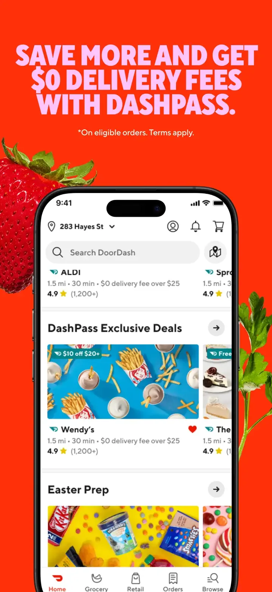

Doordash 的 Design.md 主题展示，围绕移动端、本地生活与餐饮组织页面。
Doordash mobile product theme.

#EB1700: #EB1700#C31500: #C31500#FFEBE8: #FFEBE8#FFFFFF: #FFFFFF#191919: #191919#757575: #757575#F7F7F7: #F7F7F7#E5E5E5: #E5E5E5#FF8000: #FF8000#008B4A: #008B4A#006B82: #006B82display: TT Norms Probody: TT Norms Proprimary: TT Norms Promono: SF Monofallback: -apple-system,BlinkMacSystemFont,SF Pro Text,Segoe UI,Roboto,sans-serifhints: TT Norms Pro,TT Norms Pro,SF Monocontrol: 12pxcard: 16pxpreview: 16pxpill: 28pxcircle: 50%scale: 4px,8px,12px,16px,20px,28px,50%source: design-mdbase: 4pxscale: 2px,4px,8px,12px,16px,20px,24px,32px,40px,56px,72pxsource: design-md